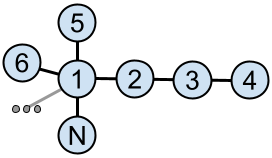

This problem describes an impartial game which can be analyzed using the Sprague-Grundy theorem.
However, the number of possible states in the game is quite big. There can be $$$2^{\mathbf{N}}$$$ sets of blue vertices, and even after we use the Sprague-Grundy theorem to reduce the problem to consider only connected sets of vertices, the number of states is still big. For example, a star which has the center vertex connected to $$$\mathbf{N}-1$$$ leaves has $$$2^{\mathbf{N}-1}+\mathbf{N}-1$$$ connected sets of vertices.
We could go a bit further and notice that isomorphic subtrees can only be considered once, which reduces the number of states much more. We do not know the exact number, but the worst trees we were able to find had between 7 and 8 million non-isomorphic connected subtrees for $$$\mathbf{N}=40$$$. This is still quite hard to process within the time limit given that the processing for each state becomes quite expensive, with tree isomorphism involved.
So how could we make things simpler for ourselves?
One approach is to try to construct a concrete tree by hand that is winning for the second player. The game for this problem was intentionally chosen in such a way that this is not easy: for example, every chain (a tree where each vertex is connected to the previous one, $$$1-2-3-\dots-\mathbf{N}$$$) is winning for the first player, as they can take either 1 or 2 middle vertices and then make symmetric moves.
However, it turns out that for even values of $$$\mathbf{N}$$$ there are several relatively simple constructions. For example, consider a starlike tree consisting of the center vertex $$$1$$$ plus $$$\mathbf{N}-3$$$ chains attached to it, one chain with 3 edges ($$$1-2-3-4$$$) and all other chains with 1 edge ($$$1-5, 1-6, \dots, 1-\mathbf{N}$$$).

The number of chains with 1 edge is even, so if the first player takes the endpoint of one of them, we can take another one and arrive at a smaller starlike tree with the same property, unless there is just one left, in which case we simply have a single chain with 4 edges and 5 vertices and can win by taking one or three middle vertices of it.
If the first player takes the center vertex together with some neighbors, then we are left with one chain with 2 or 3 vertices, and some number of isolated vertices. We can choose either to eliminate the chain, or to reduce it to an isolated vertex, in such a way that the number of resulting isolated vertices is even and we will win.
If the first player takes two vertices of the longer chain together with the center vertex, then we are left with an odd number of isolated vertices, so we can take one of them and win.
If the first player makes the longer chain shorter, then we can take the center vertex together with some neighbors in such a way that an even number of isolated vertices remains.
If the first player makes a move in the middle of the longer chain such that we have a star plus a separate isolated vertex, then we can again take the center together with some of its neighbors in such a way that an even number of isolated vertices remains.
Finally, if the first player makes a move in the middle of the longer chain such that we have a star plus a chain with 2 vertices, then we remove one of the leaves of the star. If we and the first player keep removing star leaves with each move, then after one of our moves only one leaf will be left, so we will have two chains with 2 vertices each and we can do symmetric moves to win. And if the first player tries taking the center of the star, or do something to the chain with 2 vertices, then we can always get an even number of isolated vertices after our move.
We were not able to come up with a similar explicit construction for odd values of $$$\mathbf{N}$$$. Also, even for even values of $$$\mathbf{N}$$$ coming up with this construction was not required to solve the problem. You can find an alternative approach in the next section.
What can we do when $$$\mathbf{N}$$$ is odd, or when we cannot come up with the above construction for even $$$\mathbf{N}$$$?
The key idea is to consider some very restricted class of trees, so that:
We have found that many classes of trees work, for example:
Having chosen such a class, we can then quickly implement the nim-value computation, and then either do an exhaustive search over all trees in the class, or keep generating random trees in the class until we find at least one example for each value of $$$\mathbf{N}$$$ between 30 and 40.
It was also possible to choose a class of trees with enough diversity and fast enough nim-value computation, but that would still require to implement general tree isomorphism. This would of course complicate the implementation a bit more, but still allow to solve the problem. One such class is very narrow trees where vertex $$$i$$$ is connected either to vertex $$$i-1$$$ or to vertex $$$i-2$$$.
Having found the winning tree for each value of $$$\mathbf{N}$$$, we can then hardcode them in the solution we submit. We still need the nim-value computation code as part of the solution in order to actually play the game after printing the tree. This was, in fact, one of the reasons for making this problem interactive: had we just required printing a tree for a given $$$\mathbf{N}$$$, the submitted solutions would likely just consist of 10 constants, and it might be possible to just find a solution in a few guesses, at least for Test Set 1.
Of course, it might happen that you choose a class of trees that does not give a solution to all possible cases. However, given the diversity of classes that work in this problem, it is most likely possible to adjust your class slightly in such a way that you do not need to complicate the nim-value code too much, but that allows to find a solution. Of course, doing this quickly required a certain intuition or "feeling" of the problem.
While the contestants had the luxury of choosing a class of trees where finding nim-values is quick, they did not have to do it, and therefore the judge had to deal with arbitrary trees.
The judge had a very well-optimized computation of nim-values for the general case, using tree isomorphism to reduce the number of states it has to process. In the worst case we found for $$$\mathbf{N}=40$$$, it could find the nim-values for all states in about 70 seconds (this was optimized about 20x from our first version). However, we were not sure that the case we found is truly the worst (and this was another reason for making this problem interactive), and we also did not want the contestants to have to wait for a long time for the verdict.
Therefore we have introduced additional logic in the judge when considering the very first move of the game. We iterated over possible first moves in the order of increasing size of the largest connected component remaining after the move, and stopped iteration in two cases:
The order of checking the first moves ensured that only a few states would need to be visited to check the first option for the first move, because all connected components would have a size of at most 20 after it, therefore we would likely process quite a few first moves before we run out of the 500000 states budget. And for the values of $$$\mathbf{N}$$$ up to 33 or so, we would actually process all options for the first move. This allowed us to be relatively confident that we would catch most incorrect solutions, but still have the judge finish in 4 seconds per case.
After the first move, the judge always knew the nim-value exactly and played optimally.
The judge had to make another important decision: when it found itself in a losing position (which is the most important case to consider, as in the other case it could guarantee a win using the nim-values), which move should it do?
Initially the judge would make a random move in such situation. But then we noticed that even for the Test Set 1 solution described above, making random moves might not be enough to catch all bugs, since there are many bugs that would only be caught with a specific first move. Therefore, we have changed the behavior of the judge for choosing the first move: it tried to make such moves that would lead to different situations for the solution to handle after the first move in different games.
Two situations were considered different if they led to non-isomorphic configurations, with the additional step of collapsing $$$2K+1$$$ copies of the same subtree to 1 copy, and $$$2K$$$ copies of the same subtree to 2 copies, to avoid the judge wasting the games exploring different ways to remove leaves from a star. After the first move, if the judge was still in a losing position, it would make fully random moves.
Of course, this still left a possibility that some incorrect solutions would win all games against the judge, as it did not visit all possible states — there were at least 7 million states to visit potentially, but the judge had only 50 games, each visiting at most 40 states. However, we hope that the chances of this happening were quite low.